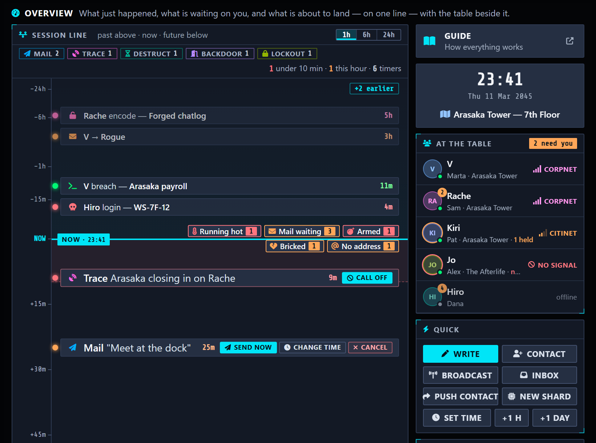
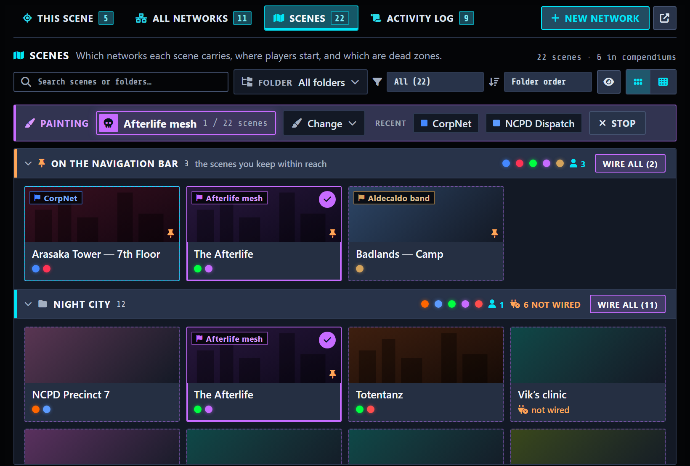
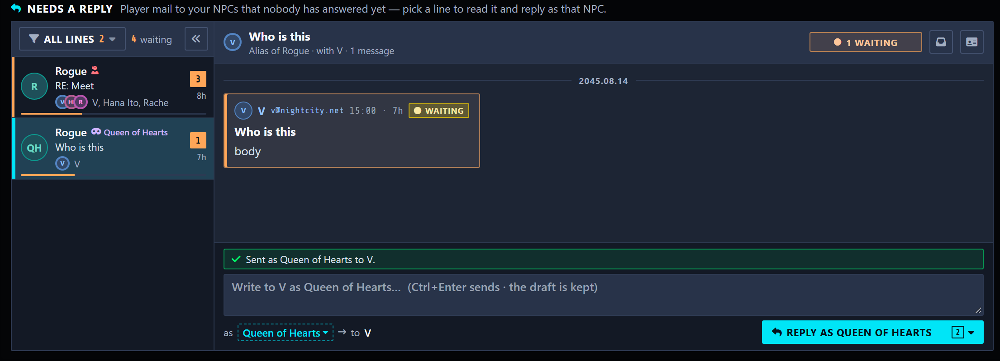
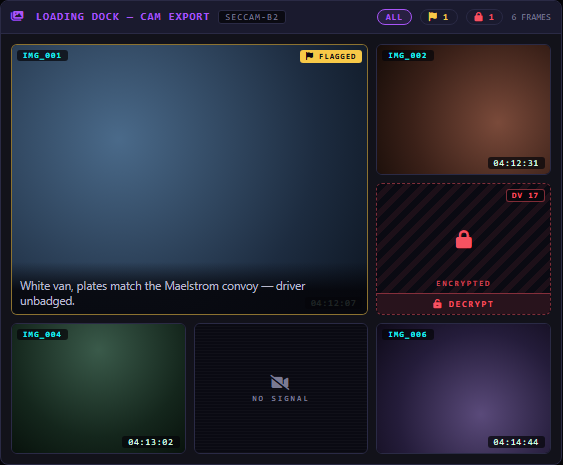
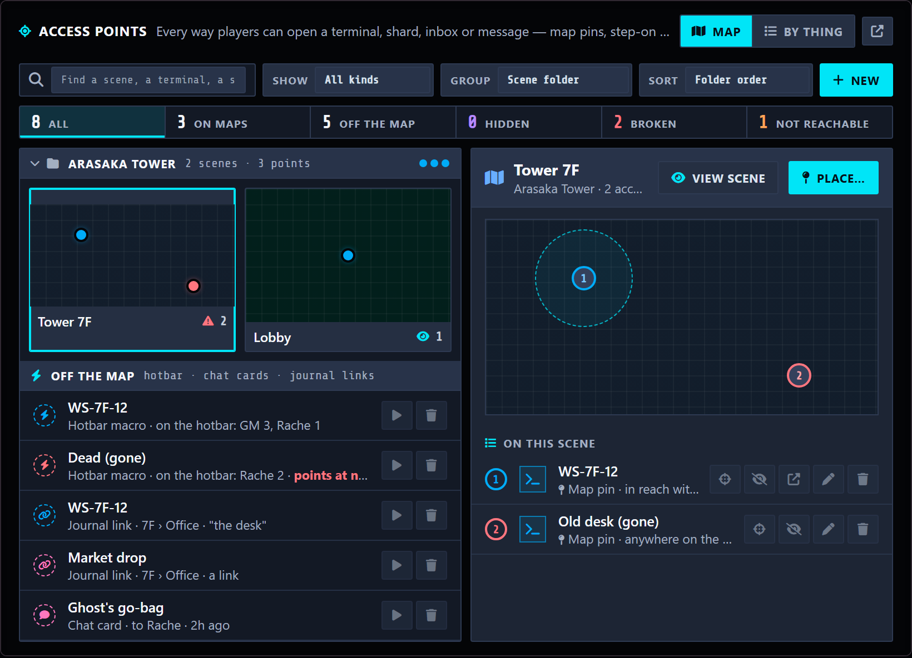
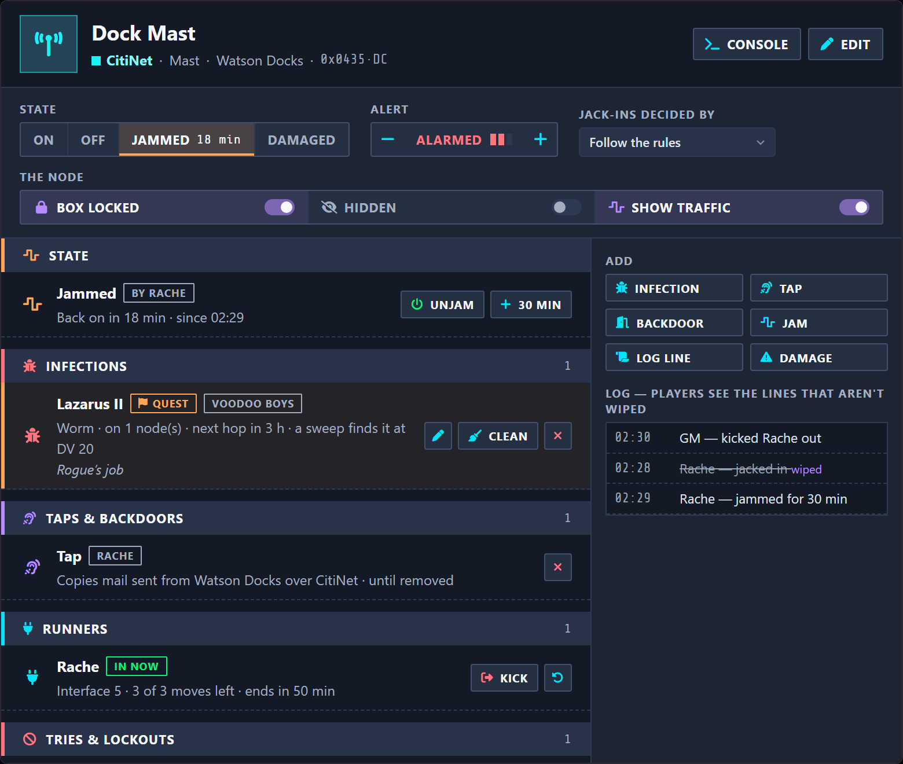
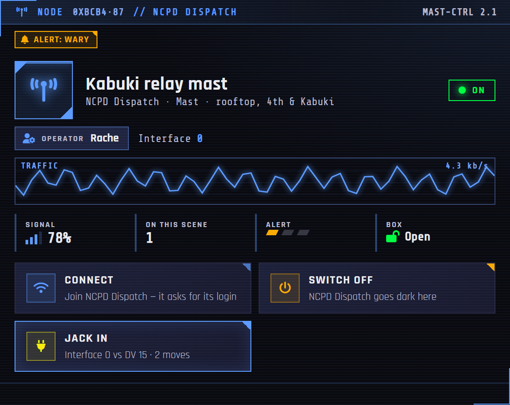

Night City Messenger (NCM) is a big module, but you don't need to learn all of it at once. Start with messaging. Add the other parts when your table is ready for them.
If you're the GM: read Part 1 to set up (about 15 minutes). Come back to the later parts when you want them.
If you're a player: use the Player Guide instead. It opens from the ? button at the top of your inbox.
Contents
// START HEREWhat is this module?
NCM adds phones, computers, networks and hacking to your Cyberpunk RED game. Everything looks like the real thing, not like a menu.
- Every player character gets an Agent: an in-game phone with messages, contacts, and money transfers. Players can customize how theirs looks.
- Scenes have networks. Your phone only picks up networks that exist where you are. Some need a password or a skill check to join. Some areas have no signal at all.
- Networks can run through nodes: routers, relays and masts on the map. Switch one off, jam it or hack it, and the network goes dark in that place.
- The GM can turn any Item into a data shard (an encrypted file players crack open) or a terminal (a computer players log into). Both can hold all kinds of content: spreadsheets, camera feeds, bank accounts, chat logs, and more.
- Players can steal data from machines, or plant fake data and malware on them. Risky actions use real Cyberpunk RED skill rolls, with an animated roll on screen. Failed rolls build up heat that the GM can punish.
- The GM runs everything from one Admin Panel.
Most tables add features in this order: messages → contacts → networks → shards → terminals → nodes → hacking. Each step works fine without the ones after it.
// PART 01GM setup
You need: Foundry VTT v12 and the Cyberpunk RED Core system. NCM uses the real CPR rules for skill checks, money, roles, and Black ICE.
1. Find the buttons
After you enable the module, look for the satellite dish icon in the left toolbar. It has these buttons:
| Button | Who sees it | What it does |
|---|---|---|
| Open Inbox | everyone | opens your phone |
| Compose Message | everyone | write a message |
| Contacts | everyone | your contact book |
| Network Management | GM only | opens the Networks tab in its own window |
| Admin Panel | GM only | the GM control center |
2. Open the Admin Panel
This is your control center. The tabs sit in labelled groups along the top:
| Group | Tabs |
|---|---|
| — | Overview |
| Comms | Messages, Contacts, Spam |
| Net | Networks, Security |
| World | Terminals, Shards, Access points |
| — | Tools |
Number keys jump between them (1 is Overview, 0 is Tools). Most tabs have a Pop out button that opens that tab in its own window, so you can keep, say, the Messages desk open beside the map. Three admin looks live in Tools: Clean dark, Clean light and High contrast, plus a text size.

The Overview is one timeline. Above the line is what just happened (mail, rolls, traces), newest closest. On the line sits everything waiting for you, grouped into chips: player mail an NPC hasn't answered, characters running hot, trace countdowns, armed plants, bricked shards, setup gaps like a player with no email address. Click a chip to see the items and act on them; dismissing one hides it until it changes. Below the line are the timers about to fire (scheduled mail, self-destructs, countdowns), with zoom buttons for 1 hour, 6 hours and a day. On the right: the game clock, who is at the table and which network they're on, quick buttons (write, push a contact, set the time) and a tile per tab.
3. Set up networks (5 minutes)

Open Admin Panel → Networks. It has four views:
- This scene — the scene you're running. Each network that reaches it is a signal meter in its own colour: drag it, or type a number, to set the signal. Flag the network players start on. The Dead zone switch cuts all signal here. Broadcast a message to everyone on a network.
- All networks — every network. The module comes with some; add your own for districts, corporations, or locations. New network walks you through six short steps: name and colour, where it exists, security (a password, a skill check, a key item, or a mix), effects, and so on.
- Scenes — every scene in your world, on shelves by your Foundry scene folders, with their pictures. Paint with… picks a network, then each click on a scene card gives it that network or takes it away. Wire all on a shelf does the whole folder. Scenes still in a compendium can be wired before you import them. Grid shows scenes × networks as a table.
- Activity log — who connected, logged in, failed, got locked out, moved scene, or used a node.
4. Add some contacts (5 minutes)
Admin Panel → Contacts is your master list of every NPC that players can message. It has four views:
- Directory — your NPCs. New → From an actor… turns an existing actor into a contact in two clicks; the portrait and email come with it. Open a contact to edit it in place, see who knows them, and share it with players (Share) or take it back.
- Players — each player character: what they know, the groups they hold, their identities.
- Groups — named lists of contacts ("The Crew", "Arasaka Leads"). Push one to a player and it lands in their contact book, contacts included. Re-pushing updates their copy. A group can have a picture.
- Who knows whom — a map (or a table) of which character holds which contact.
Also worth knowing:
- Send as — the picker in the bar at the top opens the composer as any NPC.
- Send-only addresses — good for system addresses like
alerts@arasaka.com. Players get mail from it but can't reply. - Aliases — one character can have several identities: a main address and burners, cover names, a work account. Open a contact and use Add an alias (an NPC with no actor can have them too). Mail to any alias lands in the same inbox, replies go out as the alias the mail reached, and an alias never shows the character's real portrait unless you give it one.
- Voice — a short note on how an NPC talks. Only you see it; it shows up when you answer their mail.
- Correspondents — on an NPC, this tab shows everyone writing to them and who is still waiting for an answer.
Don't build the whole city. Two or three NPCs your party actually talks to is plenty for the first night.
5. Tools worth a visit
Admin Panel → Tools:
- Import / Reinstall Macros — adds two macro folders with handy shortcuts for you and your players. Optional, but nice to have.
- Email Domains & Addresses — the domains players can pick from, and an Export / Import for every address in the world (CSV or JSON). You see the whole plan, row by row, before anything is written.
- Sounds — every sound the module makes, with where it plays. Press play to hear one, Browse to swap in your own file (you can upload it right there), set its volume, or switch it off. Your choices play for everyone, so keep the files somewhere your players can load them.
- Time Settings — see the next step.
- Purge Messages, Orphan Audit, Factory Reset — clean-up tools. Each one asks before it changes anything.
6. Pick a clock
Tools → Time Settings (or Time Source in Module Settings) controls what clock the module uses for timestamps and countdowns: real time, world time (works with Simple Calendar), manual (you move it forward yourself), or a fake in-game date. Real time is fine to start. You can change it later. The Overview's quick buttons move a manual clock on by an hour or a day.
7. Bring in the players
That's it. Tell your players to click Open Inbox. The module walks them through the rest.
// PART 02Players: your Agent

Players have their own short, spoiler-free guide: docs/NCM-Player-Guide.pdf. It opens from the ? button at the top of a player's inbox, or Player Guide in the panel behind their portrait. You can open it from that panel too. It covers first-time setup, mail, aliases, contacts, shards, terminals, nodes and themes, and it leaves out what your traps do.
Point your players at it on the first night. Two things are worth knowing as the GM:
- First time. A player clicks Open Inbox, picks a character if they own several, and picks an address. Require Email Setup in Module Settings controls whether that step is forced. An address you give a character yourself counts, so they aren't asked again.
- Aliases. You create them (Part 1); players choose between them. A player with an alias gets Sending as behind their portrait, which sets the address new mail goes out from until they change it, and a picker on the composer's From line for one message. Replies go out from the address the mail reached.
// PART 03GM: running the mail

Admin Panel → Messages has four views:
- Needs a reply — every conversation a player is waiting on, longest wait first, one row per NPC and the identity they wrote to. Open one to see the whole conversation, answer right there as that NPC (with their voice note beside you), or mark it answered. Open in the full composer carries your draft over.
- All mail — every message in the world on a calendar you click into: year, month, week, day. Search, filter by who, and every count follows your filters. Open a message to see where it went (sent, delivered, read, replied — and why not, if it didn't), reply as the identity it reached, open the inbox it's in, share it to chat, mark it read or unread, or delete it.
- Inboxes — every mailbox in the world, sorted how you like, with a Needs a look list (most unread, gone quiet, owner gone).
- Outbox — mail that didn't arrive (with the reason and a Retry), mail waiting to deliver (queued on a player's phone), scheduled mail, and running timers (self-destructs).
What you can do when you write:
- Send as anyone. Pick any contact in the From field, including one of a character's aliases. When players message an NPC, you get a popup, and the mail collects in Needs a reply and on the Overview.
- Anonymous send. Turn on Anonymous Send — Enable in settings, and the composer gets an option that hides who you are. Players see a glitchy masked avatar instead. They can reply without knowing who they're talking to, and if you allow it, they can roll to trace you. Great for mystery employers.
- Self-destruct. Set a message to delete after it's read, or after 1, 6, or 24 hours.
- Schedule it. Write now, deliver later — from any sender to anyone, eddies included. The GM's client delivers it when the time comes, so a GM has to be in the game then.
- Send via a network, or backdate it. Click the network chip to send through another network for this message only; the date chip backdates a message, or schedules it if you pick a time in the future.
- Lock it. The Lock chip puts ICE on a message — a DV, Standard / Red / Black ICE, what a miss does, and which Black ICE actor bites.
- Preview as recipient. The Preview button shows exactly what the player will open — the masked sender if you are anonymous, the lock they have to breach, the self-destruct note.
- Message templates. The file icon at the right of the editor toolbar holds your templates: insert one, save what you are writing as a new one, or import / export them as JSON.
- One message, many people. Type a group's name in To and it goes to everyone in it; each recipient gets their own copy and can Reply All. Mass Broadcast can send to the whole party or one of your groups, and tells you by name if anyone couldn't receive it.
- Spam. The Spam tab has ready-made junk mail you can send to players, and can send it automatically when they join certain networks. A "spam" message can carry anything a real message can. Use that. You can also mark any address (or a whole
@domain) as a junk sender from the message itself.
// PART 04Data shards

A data shard is an Item that has been turned into an encrypted file. It's loot that players crack open.
Make one
Right-click any Item and pick Convert to Data Shard. As GM, it converts right away. Right-click again for Configure Shard to set the difficulty, the skill needed, lockouts, and Black ICE that attacks players who fail. Its Theme tab sets the shard's look, including its own CRT film, and the startup can be a video. Admin Panel → Shards lists every shard in the world as a cartridge, with + New for a blank one, import and export.
Renaming. Right-click a shard and pick Rename… — the name changes on the shard and the item together. Turning a shard back into a normal item restores its original name and picture. Shard Name Prefix in Module Settings can put a tag like [SHARD] in front of every shard's name.
What players call them. Setting What Players Call a Shard: Data Shard (default), Memory Chip, Data Chip, or your own word. It changes what players read everywhere; your GM windows keep saying "shard".
Integrity. Turn it on for a shard (Configure Shard → Systems) and every failed hack damages it: text garbles, files go missing, and at zero the shard is bricked. Admin → Shards shows it as a bar you can damage, repair or salvage.
Put stuff inside
Open the shard and add entries. There are 18 kinds of content, and each one looks like the real thing:
| Group | Types |
|---|---|
| Messages & records | message, chat log, records database, calendar, note |
| Data & money | spreadsheet, bank account, password vault, eddies drop |
| Media & intel | photo gallery, live camera feed, document, dossier, audio/video log, building plan, location pin |
| Dangerous | program, malware, system log |
Every type has a Load example button. That's the fastest way to learn: load the example, look at it, change it.
Bringing text in from elsewhere. Paste straight into a Document paragraph (or a message body) from a journal, Word, a web page or a PDF. The module strips the source's colours and fonts, turns headings into new sections, and rejoins the hard-wrapped lines a PDF copy produces. For a whole page at once, use Import from Journal under the Document body.
Almost anything can be locked. Encrypted photos, blacked-out paragraphs, hidden identities — each one takes a skill roll to open, and you can set failed rolls to trigger a trace.
Give it to the players
The shard is a normal Item. Hand it over however you like: drop it as loot, put it on a body, trade it, attach it to a message, or put it on the map (Part 6). The player cracks it open with a skill check. There's a whole animated hacking sequence, and lockouts if they keep failing.
Attaching one to a message. In the composer, the microchip button is Attach Data Shard. It opens a searchable list of every shard you can reach (yours, the world's, other characters' for the GM), and you can tick several at once. The player opens it straight from the message, and it's also listed on the Agent's Shards tab.
You do not need to give players permission on the shard. When a player breaks into a shard they don't own, the module asks the GM's client to record it, so the reveal is never spoiled by a permissions change.
Letting players write on them
Players can encode their own shards with the Shard Encoder (Admin → Shards → Player Authoring switches it on and sets who may, what blanks they can write on, and what it costs). By default a shard you made is read-only for players, and a shard a player made can only be reopened by the character who encoded it. To change that for one shard, open Configure Shard → Security → Player Editing.
// PART 05Terminals

A terminal is an Item turned into a computer that players log into. A corp workstation, a ripperdoc's records, a street bulletin board.
Make one
Right-click an Item and pick Convert to Terminal, or use + New in Admin Panel → Terminals. The setup screen has six tabs:
- Identity — name, organization, folder names.
- Accounts — the important one. Each account is a login with its own mailbox and its own files. Set a username, portrait, admin rights, and security (password, skill check, or key item). Accounts can be hidden — players only find them if they learn the username somewhere else. This tab is also where the machine's content lives.
- Theme — colors, fonts, wallpaper, and the CRT film for this machine. A preset library with 12 ready-made looks (Arasaka workstation, NCPD precinct, Trauma Team, street BBS, and more) sets everything up in one click.
- Boot & Login — the startup screen (or a video that plays instead), six login screen styles, four mailbox layouts for after login (Classic, Tabs, TTY, Desktop), a message of the day, a screensaver, and the machine's sound profile.
- Network — which network the machine itself is connected to, and how close a token has to be to its map pin.
- Exfil — what players are allowed to do with what they find (see below).
Admin → Terminals shows every machine as a server rack with status lights: someone logged in, a lockout, an armed plant. Pick one to see what's happening right now and clear lockouts or log people out.
Put things on it
Everything a machine holds is in Accounts. Each account row folds open into its mail and its files. Above the accounts sits the Shared volume — files on the machine itself, which every login sees. + Message and + File open the same editor the shards use; + Folder adds a folder, and every folder has a who can open it control: everyone, admins only, a minimum clearance level, or named accounts.
An account's existing mail. If an account is linked to an NPC or a character, its Mail tab has Import from inbox to copy that person's Agent mail onto the machine. From then on, new mail to and from that person appears there by itself.
Admin accounts can look into other accounts (View as admin in the account switcher). Sending mail as an account can be switched on too: a logged-in player gets a Write button and sends as the account's owner. Someone writing as an account that isn't theirs is flagged for you in Admin → Messages.
What players see
Boot screen, then login, then the machine — all in that machine's own look. A switch picks MAIL or FILES (a directory tree). In the TTY layout there's a folder bar at the top and a command line: click a folder or a hint, or type a number to open that row, cd to open a folder, ? for the commands, logout to switch account.
Taking data
The Exfil tab controls what players can do with files they find. Each action can be off, allowed, or allowed-with-a-roll:
Download · Burn to shard · Forward · Leak (posts it to public chat) · Sell (instant eddies) · Wipe (delete it — you can restore it from a recycle bin)
Failing a gated roll triggers a trace. Live camera feeds can't be downloaded, but players can save a single frame, loop a camera, or cut it. A looped camera shows a frozen timestamp — which someone might notice.
// PART 06Ways in: putting things in the world

A terminal, a shard or a network node can be reached in several ways. Right-click the item (or use the Access button on its admin row) and pick from Terminal options / Shard options:
- Place on a scene… — put it on the map as a pin players double-click, a step-on area that opens it when a token walks in, or both. You choose where (the middle of your view, or click on the map), how close a token must be, and whether players see it right away or only once you reveal it. A hidden way in is invisible to players until you flip it.
- Add to hotbar — a macro that opens it. You can also drag the item (or its admin row) onto the hotbar.
- Post to chat… — a card players click to open it. Choose who sees the card, and its colours: matching the thing, the module's look, or your own.
- Copy journal link — a link you paste in any journal (
@NCM[...]), so a handout can open the terminal it describes. - Copy macro code / Make a macro — for other modules that run macros (Monk's Active Tiles, a door, a region trigger): the code opens it for whoever runs it.
Admin Panel → Access points shows every way in at once: a Map view with each scene's pins and areas, and a By thing view listing each terminal, shard and node with all its ways in — and which ones players can't reach at all yet.
// PART 07Network nodes

A node is a physical box that carries a network into a place: a router, a relay, a mast, a junction box, an antenna. Nodes are optional. A network with no nodes works exactly as before.
The rule: a scene that has nodes for a network only gets that network while at least one of them is up. Switch them all off (or jam or damage them) and the network goes dark on that scene. Players on it are moved to another network, or lose signal and their mail waits in a queue. Machines on that network go to local-only. A node can also carry its network onto a scene that doesn't otherwise have it.
Add a node
Admin → Networks → All networks → pick a network → Nodes → Add a node: a name, a kind, the scene it stands on, and switches for Hidden, Box locked (only a hack can switch it), and Show traffic. Then Place on the map from its ⋯ menu so players can find it. Each node row shows its state (click to switch it on or off), an Inspect button, and a ⋯ menu for everything else.
What players do at a node

Opening a node shows its console: its name, signal, state, alert level and a ticker of what's passing through. Anyone can Connect to its network from there. A netrunner can Jack in: a skill roll (Interface by default) against the node's DV, with a lock that opens ring by ring. Inside they get a number of moves depending on their rank, and can:
- Switch it off / on, or Jam it for a while.
- Tap it — copies of mail sent from that scene over that network land in their inbox.
- Open a backdoor — they skip the network's login from then on.
- Insert a shard — run a network program from a shard they carry: a worm that spreads to other nodes, a tap, a blackout bomb that takes down every node it reached, a sniffer that records traffic for later, or a patch that cleans the node.
- System sweep — find what someone else left there, and remove it.
- Wipe their log line so the node doesn't remember them.
Moves spent stay spent: jacking out and back in, or refreshing, resumes the same session until it runs out (60 game minutes by default), and coming back raises the node's alert. A failed jack-in counts against the network's own login lockout.
Your controls
Inspect opens the node inspector: its state, alert level and switches; everything on it right now (the jam and who did it, infections, taps, backdoors, the runners inside and how many moves they have left, who's locked out), each with a control; and its full log. Add plants your own: an infection (pick the program, who planted it, the DV a sweep needs — tick Quest and you get a whisper when a player cleans it), a tap or backdoor for an NPC, a jam, a log line that works as a clue, or damage. Kick throws a runner out, and can hit them and lock them out on the way.
The rules live in Admin → Security → Hacking rules → Jacking in: who can jack in (anyone, the Terminal operator access rule, or only certain roles and skills), the skill and DV, how rank unlocks actions, makes them easier and gives more moves, each action's DV, and what failure costs. Every node action also shows up in Networks → Activity log.
// PART 08Hacking and consequences
This is the deep end. Skip it until your table wants it.
Rolls on screen
Every skill check plays a short roll on screen — the stat, the skill, the die, the total against the DV — and posts its chat card when the result lands. If you use Dice So Nice, the 3D dice roll first.
Trace & heat
Every risky roll reports to Admin → Security:
- Live — what needs your call right now.
- Activity — the full record of who did what, drawn as a seismograph (a failure kicks the line, a success is a tick). Click a spike to see what happened.
- Heat — failed rolls build heat on whoever failed them, shown as a thermometer per character. Heat fades over time. When it gets high, you can hit back: lock them out, attack with Black ICE, or start a countdown the player watches tick down on their screen ("Arasaka is closing in").
- Machines — planted programs and the recycle bin.
- Hacking rules — how rolls get resolved, who can use terminals, what players can see of a defence, how role abilities roll, and jacking in.
Planting fake data
Players can also put things ON a machine. They carry a forged file (a fake chat log, a doctored photo) to a terminal and upload it. A forge roll decides how it goes: clean, sloppy (it works, but an inspection will reveal it's fake), or rejected. Planted files go off the next time someone logs in. You choose in settings whether they fire on their own or wait for your go-ahead.
The Malware Workshop
Admin → Security → Programs opens the Malware Workshop. Build programs with real effects: keyloggers, secret backdoor accounts, ICE traps, logic bombs, file wipers. You can disguise them as harmless files. Give them to players as Items; they carry and use them through the Program Deck.
Fighting back
Players have tools too. ANALYZE checks whether a file is really what it says it is — the magnifier button on a typed file's header, in a terminal and on a shard alike. SYSTEM SWEEP scans a whole terminal (or a node) for planted programs — it reveals what the roll is good enough to find, and never says whether it missed anything. On a terminal it lives in the OPS menu next to the operator chip.
How hack rolls get resolved
Security → Hacking rules → Netrunning resolution has three modes. Pick what fits your table:
- Auto — the module rolls and resolves everything. Fast. This is the default.
- Flagged — same as auto, but you get a card telling you what happened so you can work it into the story.
- GM decides — no auto-roll. The player's screen waits while you get a prompt. Run the netrun at the table however you like, then click the result. Both screens can step aside while you play it out.
A single terminal or node can override this for itself.
Who can hack at all
Security → Hacking rules → Terminal operator access limits who can use terminal tools (upload, sweep): by role, by skill level, by gear they need to own, or by naming specific characters. Jacking in has its own rule (Part 7). Countermeasure visibility decides whether players see what guards a lock (the ICE, the DV) or only that it's locked.
// REFERENCEThree rules to remember
These three things cause almost every "it's broken" report. Tell your players up front:
A GM has to be online for player actions to count.
When a player claims money, decrypts a file, jacks into a node, or schedules a message, the change goes through the GM's computer. If no GM is connected, nothing happens (the module says so). That's on purpose.
Check the OPERATOR chip.
It picks which character rolls and gets paid. Wrong chip, wrong wallet.
"The button does nothing" is usually a setting.
Exfil rules, operator access, who can jack in, network range, resolution mode — check the setting before assuming it's a bug. Turning on Debug Mode makes the module explain every decision in the console.
Two more things worth knowing: self-destructing messages never destroy when a GM reads them (so you can check inboxes safely), and GMs skip most login checks — so if you want to see what players see, log in from a player account.
// REFERENCESettings that matter
All in Module Settings unless noted. The important ones:
| Setting | What it does |
|---|---|
| Time Source | which clock the module uses |
| Require Contact Verification | players can only message addresses they know |
| Smart Conversation Grouping | groups same-subject mail into threads |
| Anonymous Send — Enable | the masked-sender feature (and its trace options) |
| Spam Filter — Unknown Senders | chance for mail from strangers to land in Spam |
| Auto-Register NPC Senders | an NPC actor you send from gets a directory entry |
| Planted Programs — When They Fire | fire on their own, or ask you first |
| Role Ability Rolls (Interface) | Interface rolls as stat + rank, or rank only |
| Exfil Folder Name | what the players' stolen-files folder is called |
| What Players Call a Shard | Data Shard, Memory Chip, Data Chip, or your own |
| Shard Name Prefix | a tag added to the front of every shard's item name |
| GM Alert — Player Mail to NPCs | popup when players message NPCs |
| Terminal Pins — Auto-Show Map Notes | map pins visible without extra clicks |
| Debug Mode | the module explains its decisions in the console |
| Netrunning resolution, jacking in | Admin → Security → Hacking rules |
| Sounds | Admin → Tools → Sounds |
// REFERENCEHow to run your first sessions
A pacing that works:
- Before session 1: set up two networks and a dead zone, add three contacts, and send each player one message from someone their character knows. It'll be waiting when they first open their phone.
- Session 1: players make their addresses, style their phones, and message each other and an NPC. You answer in character from Needs a reply. That's enough. Let it breathe.
- Session 2: a job offer arrives by mail — maybe anonymously, maybe scheduled for the middle of the night. Payment attached as eddies. The job involves a data shard with three entries: a plain message, a locked photo, a bank account.
- Session 3: the job leads to a terminal pinned on the map. Two accounts, one hidden. A camera feed, an incriminating spreadsheet, and a download action that needs a roll. Let someone fail and watch the heat show up on your Security tab.
- Session 4: the building's network runs through a node in the basement. Someone has to jack in and jam it before the crew goes in — or plant a tap and listen for a week.
- Later: forged evidence, malware, worms, countdowns. Add them when the table asks, not before.
// REFERENCEIf you're making a video
Suggested chapters, in the order tables actually learn the module:
- What is NCM? (show a styled phone and a terminal login)
- GM setup: the Admin Panel, networks and scenes, contacts
- The player side: making an address, the inbox, themes
- GM mail: the Needs-a-reply desk, anonymous send, scheduling, spam
- Your first data shard: convert it, fill it, watch it get hacked
- Your first terminal: a preset look, a hidden account, a map pin
- Network nodes: placing one, jacking in, a worm
- Hacking and heat: traces, escalation, malware, sweeps
- The three rules (don't skip this one)